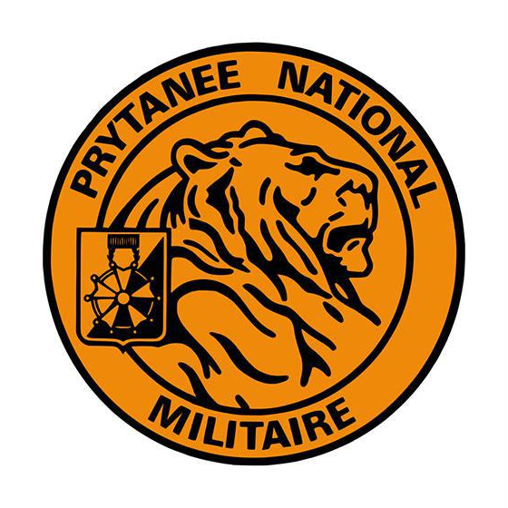
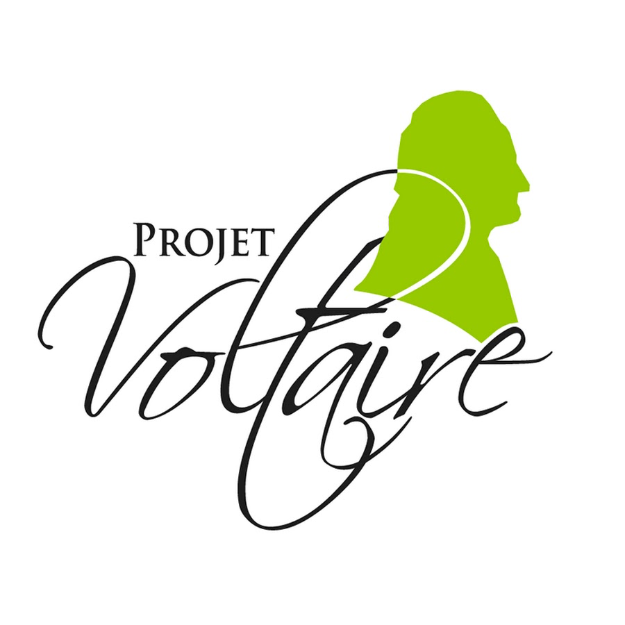
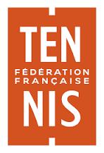
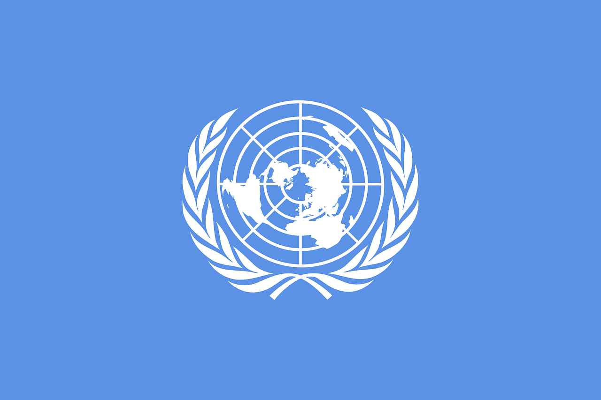

2023
Préparation Militaire Spéciale · École du Génie
Programme intensif de formation aux compétences militaires à Thorée-les-Pins.
Intensive military-skills training program at École du Génie, Thorée-les-Pins.

Certifications, distinctions et cadres exigeants qui complètent le parcours technique.
Certifications, distinctions and demanding environments that complement the technical background.
Programme intensif de formation aux compétences militaires à Thorée-les-Pins.
Intensive military-skills training program at École du Génie, Thorée-les-Pins.

Certification avancée en maîtrise du français, avec spécialisation professionnelle et commerciale.
Advanced French-language certification with professional and business specialization.

Obtention du diplôme d’arbitre avec 1er prix régional, confirmant une maîtrise des règles et de la gestion de match.
Earned the A1 tennis referee diploma with regional 1st prize, confirming rule mastery and match-management skills.

Engagement actif pendant deux années consécutives, développant des compétences en diplomatie et argumentation.
Active involvement over two consecutive years, developing diplomacy and argumentation skills.

Participation au Concours Général de Mathématiques et de Physique-Chimie.
Participation in the national Concours Général in Mathematics and Physics-Chemistry.